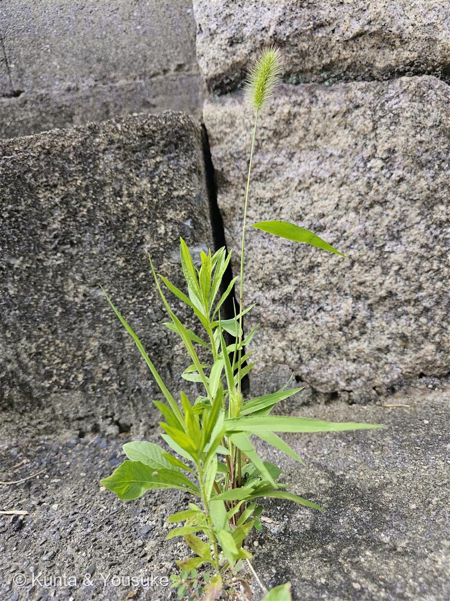
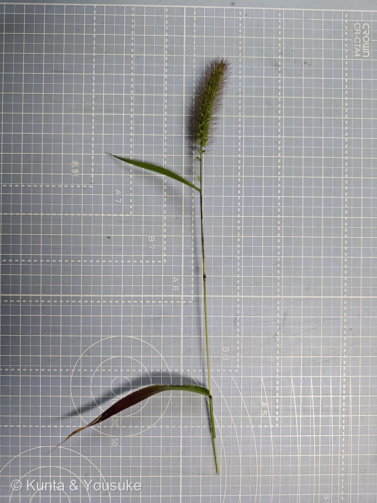
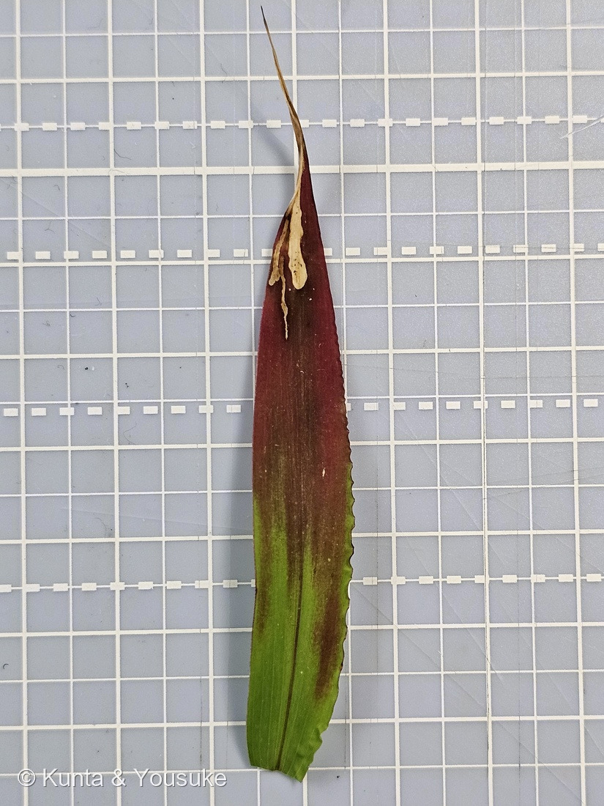
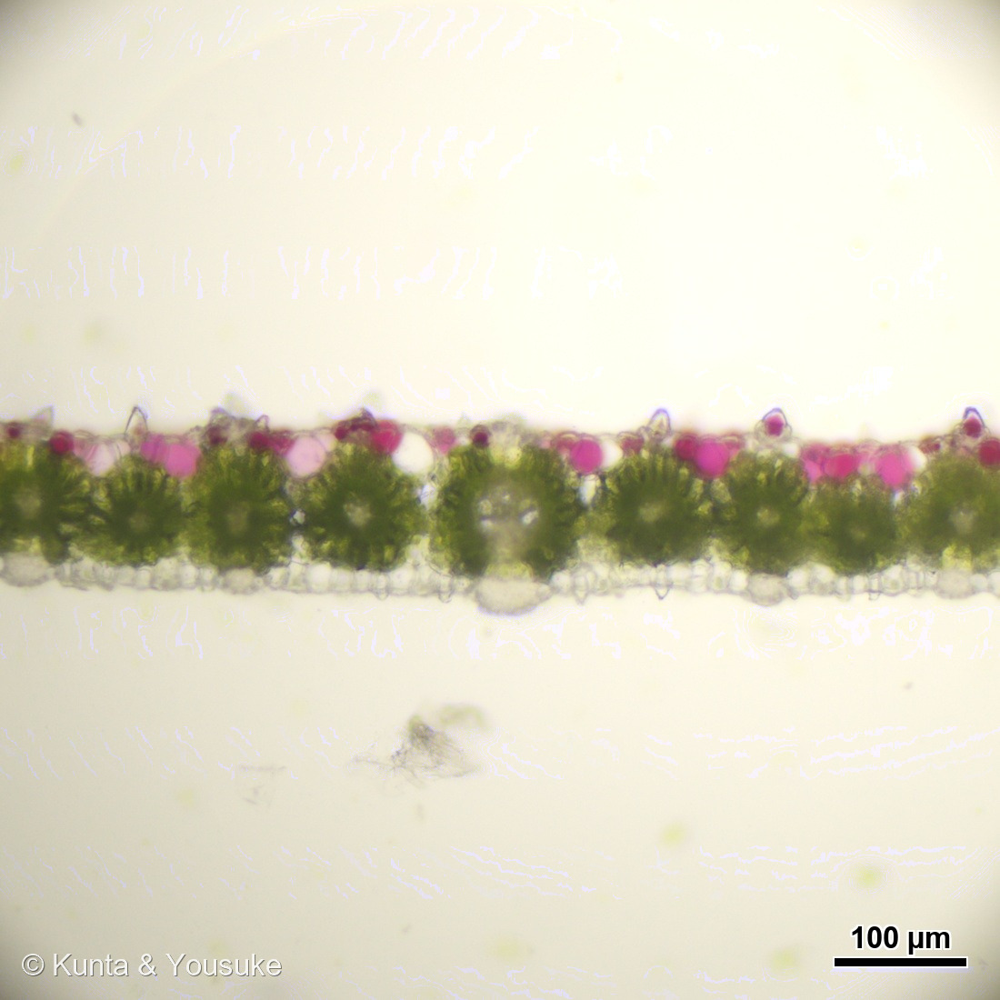
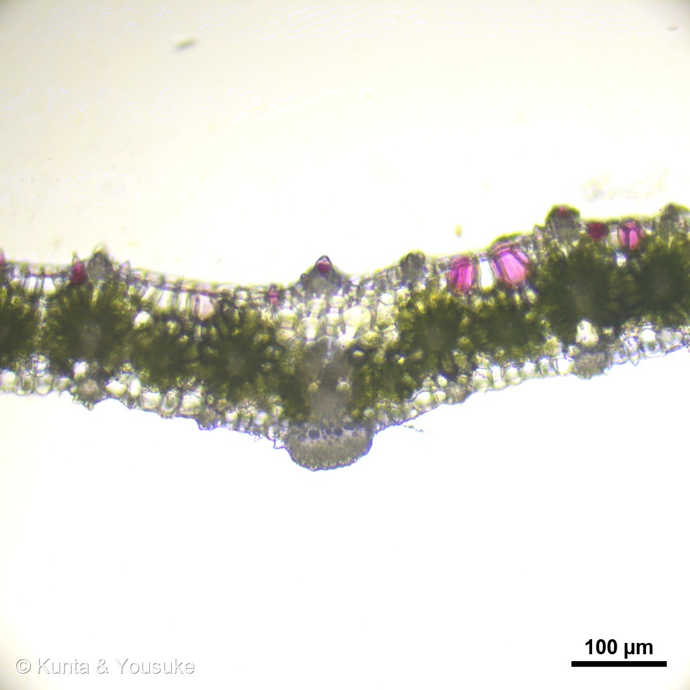
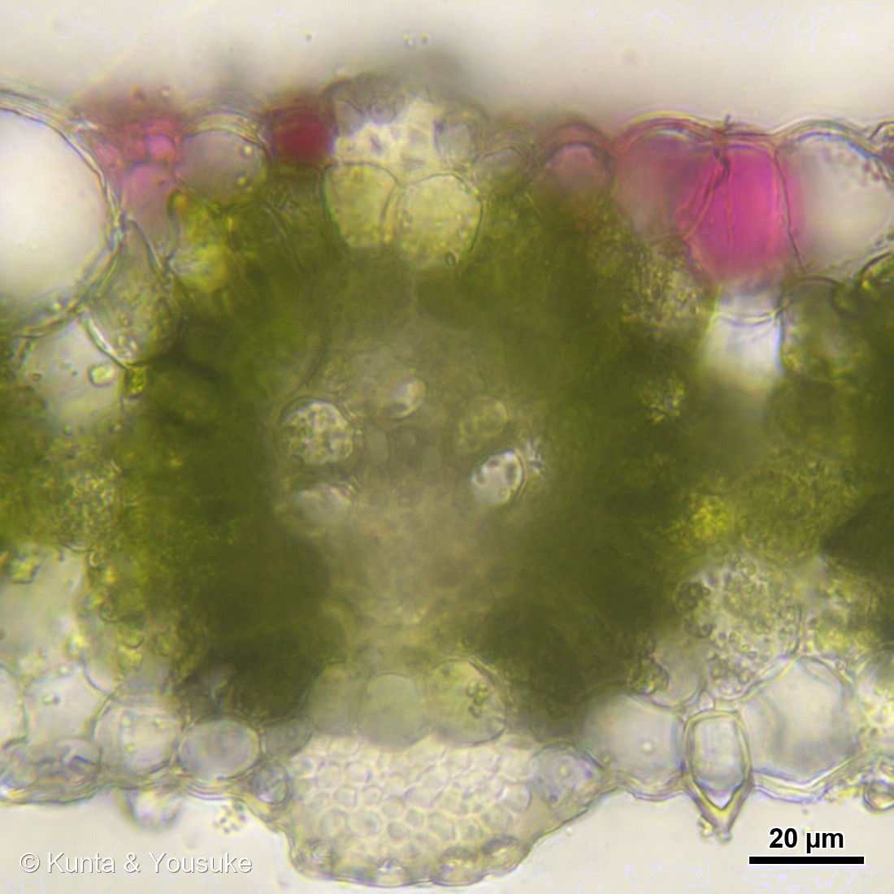
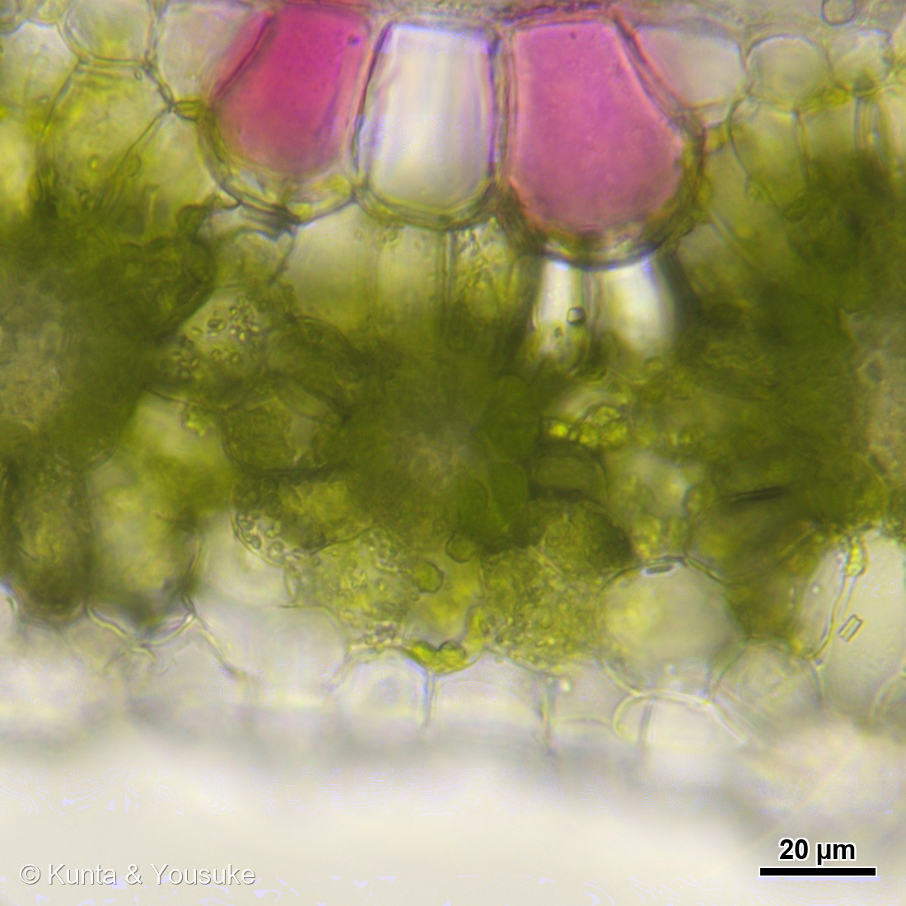
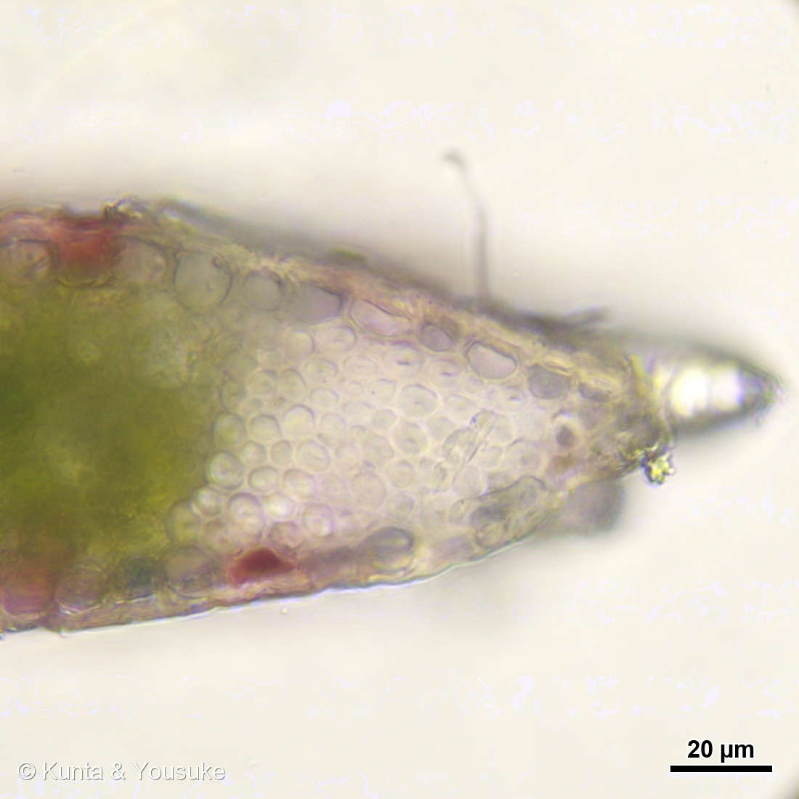

地図を読み込んでいるよ…
🔍 写真も地図も、押しているあいだ拡大して見られるよ（スマホは指を置いてすこし待ってね）。
🌍 の地図＝この子がもともと自生している場所を緑に。日本ほかユーラシア広域。
⭐ユーラシアを端から端まで。この「広さ」じたいが、ネコジャラシの強さだよ。
⚠ 地図は国（日本と中国だけ県・省）までしか塗れないから、ほんとうの分布より広く見えていることがあるよ。地図はだいたいの場所。正確なところは、上の文を見てね。
エノコログサ
Setaria viridis (L.) P.Beauv.
別名 · ネコジャラシ／狗尾草（えのころぐさ）
イネ科 · Poaceae（エノコログサ属）
名前と学名の由来
- Setaria（セタリア）＝ラテン語 seta（剛毛）から。穂の目立つ剛毛（芒＝のぎ）にちなむ。
- viridis（ウィリディス）＝ラテン語で「緑の」。あの緑のブラシ穂の色。
- 和名エノコログサ＝「狗尾草（いぬころぐさ）」＝穂が子犬のしっぽに似ることから。別名ネコジャラシは、穂で猫をじゃらす遊びから。
この植物のこと
- イネ科エノコログサ属の一年草。夏〜秋、道ばた・空き地・畑・コンクリの隙間まで、どこでも生える代表的な雑草。この子も街なかの石の目地から立ち上がっていた。
- 緑のブラシ状の穂は、たくさんの小さな花（小穂）と、その基部から伸びる長い剛毛（芒）でできている。ふさふさの正体は、この芒。
- 穀物のアワ（粟）は、このエノコログサを改良した近縁の栽培型。ただの雑草に見えて、人の主食の親戚なんだ。
- 強い日ざしと乾燥に強いC4植物（暑さに強い効率のいい光合成）。だから真夏のカンカン照りのコンクリの隙間でも、元気いっぱい。
- No.012 アサガオを登録したときの「おまけ植物」だった子。ついに出会えて、みつけた✓。
⭐⭐⭐ 【2026-10-12 追記】切片に使った株 ── 穂を方眼で測った
- ⭐燻太さんの言葉＝「切片作りに使ったエノコログサも渡すね。」──写真②は、下の顕微鏡の切片をつくった株をカッティングマットの方眼（5mm）に置いたところ。写真③は、切片に使った葉。⭐2026年10月12日の朝に撮ったもの。⚠写真①（7月の石垣の子）とは別の株だよ。
- ⭐⭐方眼で測ったら、穂の長さは約4.5cm、小穂（ひとつぶ）は約2mm。三河の植物観察には「花序は長さ3〜7cm」「小穂は長さ約2mm」とあって、どちらも合う。
- ⭐⭐10月の、剛毛が赤紫がかった穂なので、まずアキノエノコログサを疑った。秋に本格的に咲き、剛毛が赤紫のものもある（野田市の資料）からね。でも三河によれば、アキノエノコログサは穂が大きく、小穂も約3mmと大きい。この子の約2mmとは合わないので、そこで落としたよ。⚠穂が垂れるかどうかは、寝かせた標本なので見られなかった。
- ⚠剛毛の赤紫は、決め手にしない。三河には、総苞毛が紫褐色の品種ムラサキエノコロが載っている。でも、アキノエノコログサにも赤紫のものがある。色は、いちばん弱い手がかりだから、品種までは決めないでおくね。
- ⭐写真③の葉は、先へ行くほど赤紫に染まり、つけ根は緑のまま。⭐⭐その赤い色が葉のどこに入っているのかは、下の顕微鏡で分かったよ。
⭐⭐⭐⭐⭐ 【2026-10-12 追記】🔬 切って、のぞいた葉 ── C4の車輪と、表の赤い大きな細胞
- ⭐標本＝写真③の葉の横断面。⭐2026年10月12日の朝、燻太さんのおうちの顕微鏡で（対物10倍・40倍）。⭐どの写真も、上が表（おもて）になる向きで並べたよ。





2026.10.12 朝・燻太さんのおうち 🔬 葉の横断面。スケールバーは図鑑の較正（cam25mp_05x）で描いたよ。🔍 押しているあいだ拡大して見られるよ。
- ⭐⭐⭐写真④＝緑の「車輪」が、等間隔にずらりと並ぶ。車輪のまんなかが維管束で、そのまわりを葉緑体のぎっしりつまった細胞が輪になって囲み、さらに外の細胞が放射状に並ぶ。⭐144 オヒシバで見た、C4植物のクランツ構造（花輪）だよ。
- ⭐⭐測れたこと＝車輪どうしの間隔は約80〜95µm、葉の厚さは維管束のあいだで約120µm、太い維管束のところで約140µm。⭐太い維管束のところの厚さは、10倍の写真④と40倍の写真⑥で別々に測って、どちらも約140µmだった（50µmと10µmの方眼を描いて、目で数えたよ）。
- ⭐⭐⭐エノコログサは、C4光合成を研究するための「モデル植物」なんだ。Brutnell ら（Plant Cell 2010）は、小さくて、種をまいてから6週間ほどで次の種がとれ、ゲノムも約510Mbと小さいことを理由に挙げている。⭐同じ論文は、この草を「栽培化されたアワの、雑草の親戚」と呼んでいるよ。⭐道ばたの草が、世界の研究室でC4のしくみを解くのに使われているんだね。
- ⭐⭐C4にも型がある。エノコログサはNADP-ME型（同じ論文）。この型のイネ科は、維管束鞘が一重で、メストム鞘を持たない。NAD-ME型は鞘が二重になる（Voznesenskaya ら Ann. Bot. 2006）。⭐144 オヒシバのEleusine属は、「Grass Genera of the World」でNAD-ME型とされている。⚠ただしそれは属のまとめで、オヒシバ本人とは書いていない。⭐⭐同じC4の「花輪」でも、鞘のつくりがちがうはず。⚠この写真で一重か二重かは、ぼくには見分けきれなかったから、宿題にするね。
- ⭐⭐⭐写真⑦＝表の表皮に、まわりより2倍ほど背の高い大きな細胞が3つ、ひと組で並ぶ（赤紫・無色・赤紫）。高さは約40µm、幅は25〜32µm。となりのふつうの表皮細胞は約15〜20µmだよ。⭐形と場所は「機動細胞（泡状細胞）」に合う。Matschi ら（Plant Direct 2020・トウモロコシ）によると、機動細胞は葉の表側だけに、2〜5細胞の幅の帯で並ぶ大きな細胞。乾いたときに葉が巻くことに関わると考えられてきたけれど、しくみはまだ議論中なんだ。⚠ぼくは形と場所から「機動細胞らしい」と読んだだけで、確かめてはいないよ。
- ⭐⭐⭐そして、写真③の赤い色の場所が分かった。赤紫なのは、おもに表の表皮の細胞（写真④⑤⑦。ふちの写真⑧では裏がわにも少しある）で、中の葉肉と車輪は緑のまま。⭐163 トレビスの「サラダの赤は、細胞ひとつぶんの薄さ」と同じ形だね。⚠おもしろいのは、さっきの出典がトウモロコシの機動細胞を「無色」と書いていること。この子では、その大きな細胞が赤く染まっている。⚠赤い色素の正体（アントシアニンかどうか）は確かめていない。なぜ赤くなったのかも、決めていない。
- ⭐写真⑥＝車輪のまんなかを40倍で。中央のうすい色の部分（維管束）に、丸い管がいくつか見える。その下には、小さな細胞がぎっしりつまったかたまり（幅約45µm・厚さ約30µm）が裏側へ張り出す。⚠水の通る管と、裏を補強する厚い壁の細胞だろう、というのはぼくの読み。染めていないので決めていない。
- ⭐写真⑧＝葉のふち。厚さは約85µmで、緑の部屋がとぎれたあと、色のない小さな丸い細胞（ひとつ6〜8µm）が約85µmつづく。いちばん先には、ガラスのように光るとげ（約20µm）。⚠写真③のふちの細かいぎざぎざの1つを、断面で見たのかもしれない（ぼくの読み）。
⏳ 宿題 ── 4つ
- ⏳⭐⭐アキノエノコログサを、もう一段しっかり落とす。ルーペで、小穂のいちばん外の殻（第2苞頴）が小穂と同じ長さかを見る（三河「第2苞頴は長さ約2mmで小穂と同長」）。野田市の資料では、アキノエノコログサは第2苞頴が少し短く、先がむけて見える。
- ⏳⭐⭐鞘は一重か、二重か。144 オヒシバ（NAD-ME型とされる属）とエノコログサ（NADP-ME型）の車輪を、同じ40倍でならべて見くらべる。
- ⏳⭐表の赤い色素の正体。015 ホーリーバジルでやったクエン酸で色が変わるかの実験で確かめられそう。
- ⏳⭐大きな細胞が、乾くと縮んで葉が巻くのか。乾かした葉と水に戻した葉を、同じように切ってくらべる。